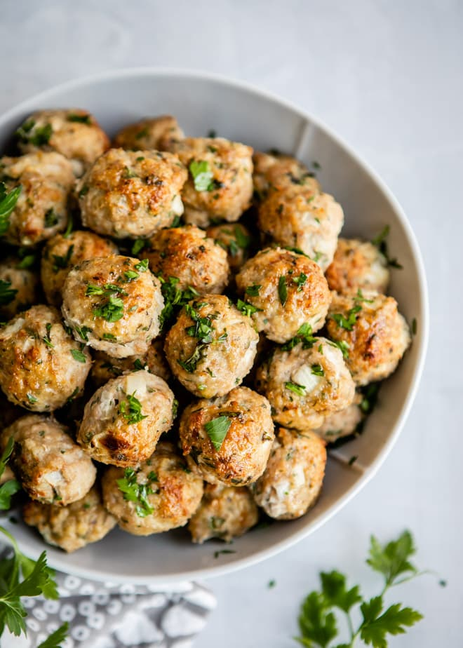

Turkey Meatballs

Description
Turkey is like the underrated protein powerhouse. It sure packs a nutritional punch by providing a high amount of protein, a low amount of fat, and a number of vitamins and minerals.
Leaner than beef, these Turkey Meatballs are healthy, packed with flavor, and incredibly moist on the inside. A combination of fresh and dried herbs give these meatballs an Italian flare while also providing a balance of flavors. Freeze them so they can last you longer!
Ingrediants
- 2 pounds ground turkey 93% lean
- 1 cup bread crumbs or panko or rolled oats
- 2/3 cup onion minced
- 1/2 cup fresh parsley minced
- 2 large eggs
- 3 cloves garlic minced
- 2 teaspoons Worcestershire sauce
- 1/2 teaspoon dried basil
- 1/2 teaspoon dried oregano
- Salt and freshly ground black pepper
- 1/4 cup olive oil (for frying)
Steps
- In a large bowl, combine ground turkey, bread crumbs, onion, parsley, eggs, garlic, Worcestershire sauce, basil, oregano, 1 teaspoon salt, and ½ teaspoon pepper.
- Meatballs should be 1-inch in diameter
- Preheat oven to 400 degrees. Line a rimmed baking sheet with foil for easy cleanup. Coat a wire rack with nonstick spray and set on prepared baking sheet.
- Arrange meatballs on rack, brush with oil, and bake until browned with crispy edges, about 15 to 20 minutes (an internal thermometer should read 165 degrees for 15 seconds)